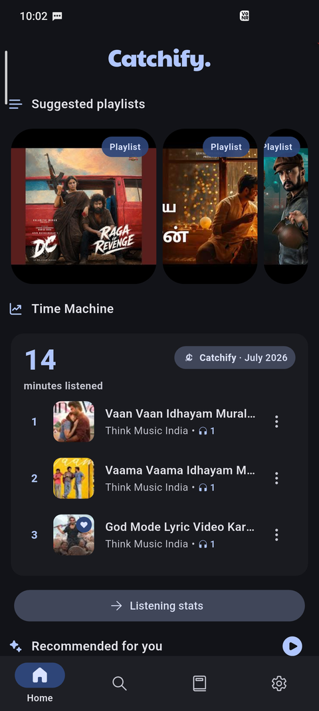
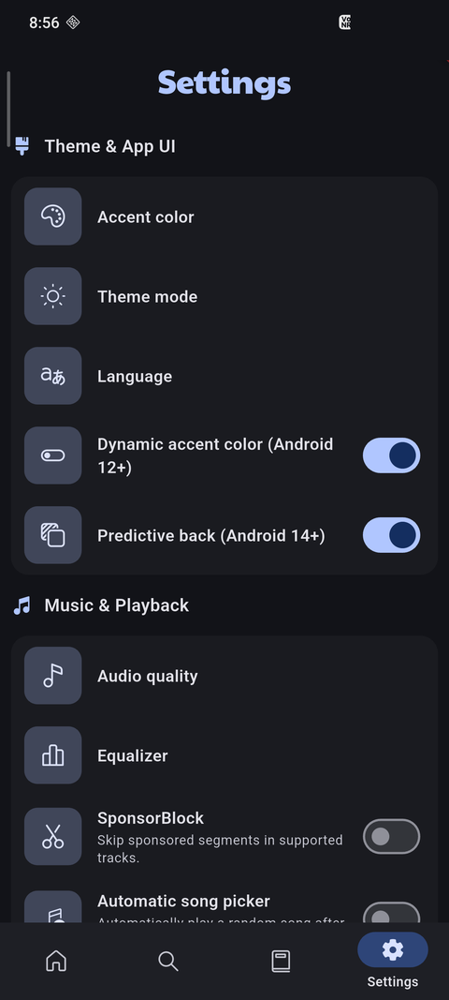
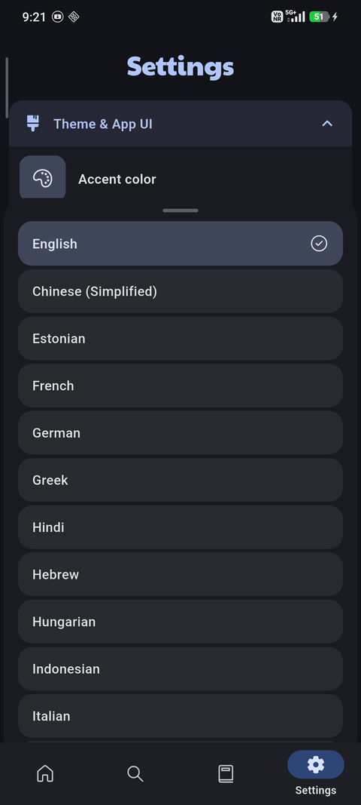

Official Source Only
Catchify does not have any other official websites. Download only from GitHub Releases.
Catchify does not have any other official websites. Download only from GitHub Releases.





Catchify is a free Android app for streaming and downloading music, with no ads, no subscriptions, offline playback, custom playlists, an equalizer, lyrics, and support for 21+ languages.
Yes. Catchify is completely free, with no ads and no subscription plans.
Yes. Download songs and playlists for full offline listening.
The interface supports 21+ languages, and music suggestions are curated for Tamil, Hindi, Telugu, Marathi, Bengali, Kannada, Punjabi, Malayalam, Gujarati, Urdu, Odia, Assamese, Sanskrit, and Konkani.
Tap the Download button on this page — the file downloads directly, then open it on your Android device to install.
Catchify is developed by Thamodharan Ganesan.